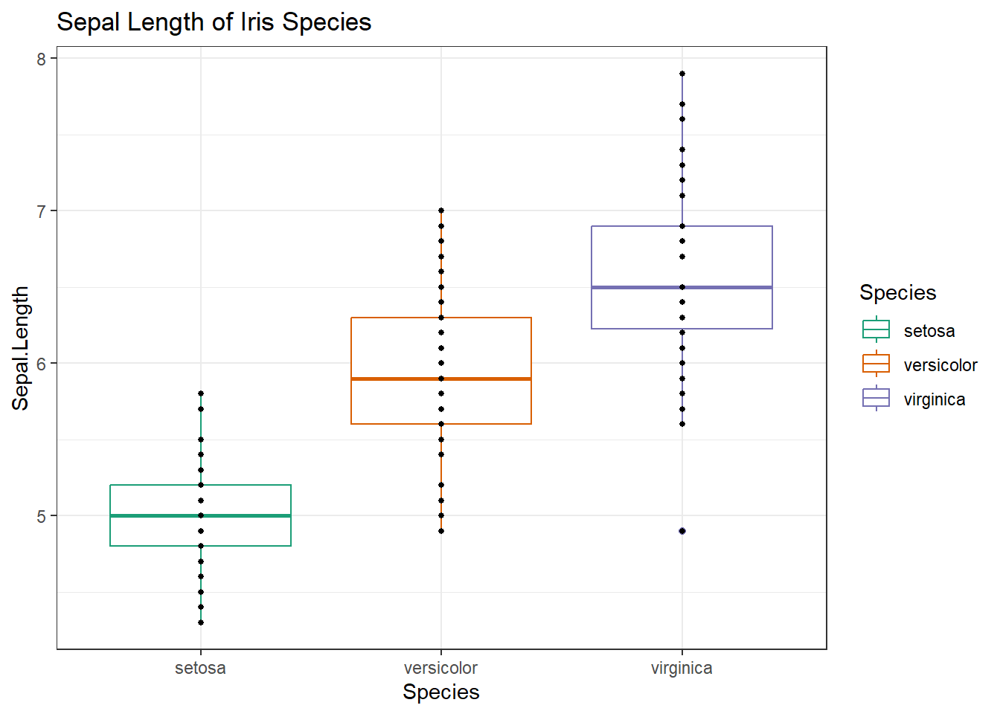
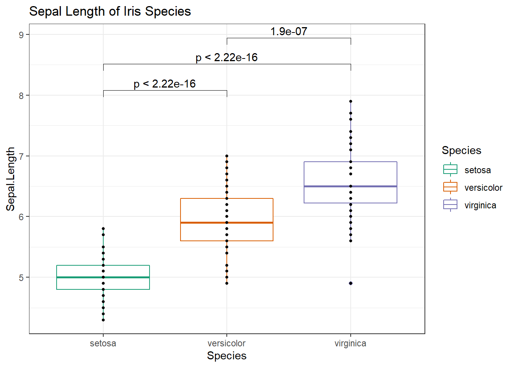

7 Statistical Tests
Objective: * To perform most commonly used statistical tests using functions in R
This tutorial was based on: http://r-statistics.co/Statistical-Tests-in-R.html
We will cover:
* ggplot2 refresher
* list structure
* most commonly used statistical tests (functions)
- Check for normal distribution (Shapiro Test)
- One Sample t-Test (parametric) and Wilcoxon Signed Rank Test (non-parametric)
- Two Sample t-Test and Wilcoxon Rank Sum Test
- ANOVA
* how to add p-values to ggplot2 using ggpubr package
First, load the “iris” dataset that comes with R.
# Make the data appear in environment # you can still use it without doing this step
data("iris")
# Look at the first 6 rows
head(iris)## Sepal.Length Sepal.Width Petal.Length Petal.Width Species
## 1 5.1 3.5 1.4 0.2 setosa
## 2 4.9 3.0 1.4 0.2 setosa
## 3 4.7 3.2 1.3 0.2 setosa
## 4 4.6 3.1 1.5 0.2 setosa
## 5 5.0 3.6 1.4 0.2 setosa
## 6 5.4 3.9 1.7 0.4 setosa# Look at the structure of a data frame (column names and data types)
str(iris) ## 'data.frame': 150 obs. of 5 variables:
## $ Sepal.Length: num 5.1 4.9 4.7 4.6 5 5.4 4.6 5 4.4 4.9 ...
## $ Sepal.Width : num 3.5 3 3.2 3.1 3.6 3.9 3.4 3.4 2.9 3.1 ...
## $ Petal.Length: num 1.4 1.4 1.3 1.5 1.4 1.7 1.4 1.5 1.4 1.5 ...
## $ Petal.Width : num 0.2 0.2 0.2 0.2 0.2 0.4 0.3 0.2 0.2 0.1 ...
## $ Species : Factor w/ 3 levels "setosa","versicolor",..: 1 1 1 1 1 1 1 1 1 1 ...# # Learn more about the data
# ? iris Review - ggplot2 tutorial:
Practice 4.1. ggplot2 Initialize a ggplot of the flower Species on the x-axis and the Sepal.Length on the y-axis for the iris dataset. Make this a boxplot, where the boxes are colored by species. Color boxes using an RColorBrewer palette called “Dark2”. Add geom_points with size of points set to 1. Use theme_bw(). Add a title “Sepal Length of Iris Species”. Assign this to a variable called g. Plot g.
# Load required libraries
library(ggplot2) # library to make plots
library(RColorBrewer) #library to pick colors
# Initialize plot
g <- ggplot(iris, aes(x=Species, y=Sepal.Length))+ #
# Add layers using +
geom_boxplot(aes(color = Species), outlier.fill = NA)+ #make a boxplot, color by species, remove outliers;
scale_color_brewer(palette = "Dark2")+ #set colors
geom_point(size=1)+ #add points, NOTE: replots all values including outliers
ggtitle(label = "Sepal Length of Iris Species")+ #add title
theme_bw() #set theme to black and white
g
# NOTE: you would say "fill" instead of "color" to fill boxes in in aes() and use scale_fill_brewer() instead of scale_color_brewer()
# Save plot using ggsave()7.1 Lists
- A list is an ordered collection of objects, which can be vectors, matrices, data frames, etc.
- In other words, a list can contain all kinds of R objects.
- List elements have a name, index, and value, and can be accessed by $ or [[]]
e.g. [[“name”]] or [[1]] or $name
- Many functions return lists (e.g. ggplot, statistical tests) - look at environment for overview
# Elements in a list have names and value
# Element value can be any type and structure of data, including vectors and data frames
# Create a list
# Note: this example features arbritrary values
my_analysis <- list(
input_data = iris, #dataframe
columns.of.interest = c("Sepal.Length", "Petal.Width"), #character vector
test = "t.test", #character
p.value = "0.0032" #numeric
)
# Print list
my_analysis## $input_data
## Sepal.Length Sepal.Width Petal.Length Petal.Width Species
## 1 5.1 3.5 1.4 0.2 setosa
## 2 4.9 3.0 1.4 0.2 setosa
## 3 4.7 3.2 1.3 0.2 setosa
## 4 4.6 3.1 1.5 0.2 setosa
## 5 5.0 3.6 1.4 0.2 setosa
## 6 5.4 3.9 1.7 0.4 setosa
## 7 4.6 3.4 1.4 0.3 setosa
## 8 5.0 3.4 1.5 0.2 setosa
## 9 4.4 2.9 1.4 0.2 setosa
## 10 4.9 3.1 1.5 0.1 setosa
## 11 5.4 3.7 1.5 0.2 setosa
## 12 4.8 3.4 1.6 0.2 setosa
## 13 4.8 3.0 1.4 0.1 setosa
## 14 4.3 3.0 1.1 0.1 setosa
## 15 5.8 4.0 1.2 0.2 setosa
## 16 5.7 4.4 1.5 0.4 setosa
## 17 5.4 3.9 1.3 0.4 setosa
## 18 5.1 3.5 1.4 0.3 setosa
## 19 5.7 3.8 1.7 0.3 setosa
## 20 5.1 3.8 1.5 0.3 setosa
## 21 5.4 3.4 1.7 0.2 setosa
## 22 5.1 3.7 1.5 0.4 setosa
## 23 4.6 3.6 1.0 0.2 setosa
## 24 5.1 3.3 1.7 0.5 setosa
## 25 4.8 3.4 1.9 0.2 setosa
## 26 5.0 3.0 1.6 0.2 setosa
## 27 5.0 3.4 1.6 0.4 setosa
## 28 5.2 3.5 1.5 0.2 setosa
## 29 5.2 3.4 1.4 0.2 setosa
## 30 4.7 3.2 1.6 0.2 setosa
## 31 4.8 3.1 1.6 0.2 setosa
## 32 5.4 3.4 1.5 0.4 setosa
## 33 5.2 4.1 1.5 0.1 setosa
## 34 5.5 4.2 1.4 0.2 setosa
## 35 4.9 3.1 1.5 0.2 setosa
## 36 5.0 3.2 1.2 0.2 setosa
## 37 5.5 3.5 1.3 0.2 setosa
## 38 4.9 3.6 1.4 0.1 setosa
## 39 4.4 3.0 1.3 0.2 setosa
## 40 5.1 3.4 1.5 0.2 setosa
## 41 5.0 3.5 1.3 0.3 setosa
## 42 4.5 2.3 1.3 0.3 setosa
## 43 4.4 3.2 1.3 0.2 setosa
## 44 5.0 3.5 1.6 0.6 setosa
## 45 5.1 3.8 1.9 0.4 setosa
## 46 4.8 3.0 1.4 0.3 setosa
## 47 5.1 3.8 1.6 0.2 setosa
## 48 4.6 3.2 1.4 0.2 setosa
## 49 5.3 3.7 1.5 0.2 setosa
## 50 5.0 3.3 1.4 0.2 setosa
## 51 7.0 3.2 4.7 1.4 versicolor
## 52 6.4 3.2 4.5 1.5 versicolor
## 53 6.9 3.1 4.9 1.5 versicolor
## 54 5.5 2.3 4.0 1.3 versicolor
## 55 6.5 2.8 4.6 1.5 versicolor
## 56 5.7 2.8 4.5 1.3 versicolor
## 57 6.3 3.3 4.7 1.6 versicolor
## 58 4.9 2.4 3.3 1.0 versicolor
## 59 6.6 2.9 4.6 1.3 versicolor
## 60 5.2 2.7 3.9 1.4 versicolor
## 61 5.0 2.0 3.5 1.0 versicolor
## 62 5.9 3.0 4.2 1.5 versicolor
## 63 6.0 2.2 4.0 1.0 versicolor
## 64 6.1 2.9 4.7 1.4 versicolor
## 65 5.6 2.9 3.6 1.3 versicolor
## 66 6.7 3.1 4.4 1.4 versicolor
## 67 5.6 3.0 4.5 1.5 versicolor
## 68 5.8 2.7 4.1 1.0 versicolor
## 69 6.2 2.2 4.5 1.5 versicolor
## 70 5.6 2.5 3.9 1.1 versicolor
## 71 5.9 3.2 4.8 1.8 versicolor
## 72 6.1 2.8 4.0 1.3 versicolor
## 73 6.3 2.5 4.9 1.5 versicolor
## 74 6.1 2.8 4.7 1.2 versicolor
## 75 6.4 2.9 4.3 1.3 versicolor
## 76 6.6 3.0 4.4 1.4 versicolor
## 77 6.8 2.8 4.8 1.4 versicolor
## 78 6.7 3.0 5.0 1.7 versicolor
## 79 6.0 2.9 4.5 1.5 versicolor
## 80 5.7 2.6 3.5 1.0 versicolor
## 81 5.5 2.4 3.8 1.1 versicolor
## 82 5.5 2.4 3.7 1.0 versicolor
## 83 5.8 2.7 3.9 1.2 versicolor
## 84 6.0 2.7 5.1 1.6 versicolor
## 85 5.4 3.0 4.5 1.5 versicolor
## 86 6.0 3.4 4.5 1.6 versicolor
## 87 6.7 3.1 4.7 1.5 versicolor
## 88 6.3 2.3 4.4 1.3 versicolor
## 89 5.6 3.0 4.1 1.3 versicolor
## 90 5.5 2.5 4.0 1.3 versicolor
## 91 5.5 2.6 4.4 1.2 versicolor
## 92 6.1 3.0 4.6 1.4 versicolor
## 93 5.8 2.6 4.0 1.2 versicolor
## 94 5.0 2.3 3.3 1.0 versicolor
## 95 5.6 2.7 4.2 1.3 versicolor
## 96 5.7 3.0 4.2 1.2 versicolor
## 97 5.7 2.9 4.2 1.3 versicolor
## 98 6.2 2.9 4.3 1.3 versicolor
## 99 5.1 2.5 3.0 1.1 versicolor
## 100 5.7 2.8 4.1 1.3 versicolor
## 101 6.3 3.3 6.0 2.5 virginica
## 102 5.8 2.7 5.1 1.9 virginica
## 103 7.1 3.0 5.9 2.1 virginica
## 104 6.3 2.9 5.6 1.8 virginica
## 105 6.5 3.0 5.8 2.2 virginica
## 106 7.6 3.0 6.6 2.1 virginica
## 107 4.9 2.5 4.5 1.7 virginica
## 108 7.3 2.9 6.3 1.8 virginica
## 109 6.7 2.5 5.8 1.8 virginica
## 110 7.2 3.6 6.1 2.5 virginica
## 111 6.5 3.2 5.1 2.0 virginica
## 112 6.4 2.7 5.3 1.9 virginica
## 113 6.8 3.0 5.5 2.1 virginica
## 114 5.7 2.5 5.0 2.0 virginica
## 115 5.8 2.8 5.1 2.4 virginica
## 116 6.4 3.2 5.3 2.3 virginica
## 117 6.5 3.0 5.5 1.8 virginica
## 118 7.7 3.8 6.7 2.2 virginica
## 119 7.7 2.6 6.9 2.3 virginica
## 120 6.0 2.2 5.0 1.5 virginica
## 121 6.9 3.2 5.7 2.3 virginica
## 122 5.6 2.8 4.9 2.0 virginica
## 123 7.7 2.8 6.7 2.0 virginica
## 124 6.3 2.7 4.9 1.8 virginica
## 125 6.7 3.3 5.7 2.1 virginica
## 126 7.2 3.2 6.0 1.8 virginica
## 127 6.2 2.8 4.8 1.8 virginica
## 128 6.1 3.0 4.9 1.8 virginica
## 129 6.4 2.8 5.6 2.1 virginica
## 130 7.2 3.0 5.8 1.6 virginica
## 131 7.4 2.8 6.1 1.9 virginica
## 132 7.9 3.8 6.4 2.0 virginica
## 133 6.4 2.8 5.6 2.2 virginica
## 134 6.3 2.8 5.1 1.5 virginica
## 135 6.1 2.6 5.6 1.4 virginica
## 136 7.7 3.0 6.1 2.3 virginica
## 137 6.3 3.4 5.6 2.4 virginica
## 138 6.4 3.1 5.5 1.8 virginica
## 139 6.0 3.0 4.8 1.8 virginica
## 140 6.9 3.1 5.4 2.1 virginica
## 141 6.7 3.1 5.6 2.4 virginica
## 142 6.9 3.1 5.1 2.3 virginica
## 143 5.8 2.7 5.1 1.9 virginica
## 144 6.8 3.2 5.9 2.3 virginica
## 145 6.7 3.3 5.7 2.5 virginica
## 146 6.7 3.0 5.2 2.3 virginica
## 147 6.3 2.5 5.0 1.9 virginica
## 148 6.5 3.0 5.2 2.0 virginica
## 149 6.2 3.4 5.4 2.3 virginica
## 150 5.9 3.0 5.1 1.8 virginica
##
## $columns.of.interest
## [1] "Sepal.Length" "Petal.Width"
##
## $test
## [1] "t.test"
##
## $p.value
## [1] "0.0032"# Names of elements in the list
names(my_analysis)## [1] "input_data" "columns.of.interest" "test"
## [4] "p.value"# Number of elements in the list
length(my_analysis)## [1] 4## Access the list
# select element by its name or its index
# Select by name (1/2)
my_analysis$p.value## [1] "0.0032"# Select by name (2/2)
my_analysis[["p.value"]]## [1] "0.0032"# Select by index
my_analysis[[4]]## [1] "0.0032"# select the first ([1]) element of my_analysis[[2]]
my_analysis[["columns.of.interest"]][1] # equivalent to: my_analysis$columns.of.interest[1] or my_analysis[[2]][1] ## [1] "Sepal.Length"# Add to list #or modify using assignment
my_analysis[["is.significant"]] <- TRUE7.2 Statistical Significance
- We define our significance level (usually p < 0.05)
- When p < 0.05, we reject our null hypothesis and accept the alternative hypothesis mentioned in your R code’s output
- Note: To get more examples, use function example(); Usage: example(t.test)
7.3 Checks for Normality
- Normal distribution (also called Gaussian) is a type of distribution where
- continuous data follows a bell-shaped curve
- the central peak represents the mean
- the probabilities for values away from mean taper off equally in both directions
- use parametric tests on normally distributed data
- test using Shapiro Test or Q-Q plots (quantile-quantile plots)
7.3.1 Shapiro Test
- To test if a sample follows a normal distribution
Null hypothesis: the data are normally distributed
* p > 0.05 #normally distributed
* p < 0.05 #not normally distributed
# Shapiro-Wilk normality test for Petal.Length
shapiro.test(iris$Petal.Length) # => p < 0.05 # not normally distributed##
## Shapiro-Wilk normality test
##
## data: iris$Petal.Length
## W = 0.87627, p-value = 7.412e-10# Shapiro-Wilk normality test for Petal.Width
shapiro.test(iris$Petal.Width) ##
## Shapiro-Wilk normality test
##
## data: iris$Petal.Width
## W = 0.90183, p-value = 1.68e-087.4 One-Sample Tests
Null hypothesis: sample mean is equal to estimate/mu * p < 0.05 #means are different
One Sample t-test
- parametric test used to test if the mean of a sample from a normal distribution could reasonably be a specific value
t.test(x = iris$Petal.Length, mu=4) # testing if mean of x could be##
## One Sample t-test
##
## data: iris$Petal.Length
## t = -1.679, df = 149, p-value = 0.09525
## alternative hypothesis: true mean is not equal to 4
## 95 percent confidence interval:
## 3.473185 4.042815
## sample estimates:
## mean of x
## 3.758# Note: in example, I'm using data that's not normally distributed- note that the 95% confidence interval range includes the value 4 within its range. So, it is ok to say the mean of x is 10
One Sample Wilcoxon Signed Rank Test
- alternative to t-Test when data is not normally distributed
# run test
wilcox.test(iris$Petal.Length, mu=20, conf.int = TRUE)##
## Wilcoxon signed rank test with continuity correction
##
## data: iris$Petal.Length
## V = 0, p-value < 2.2e-16
## alternative hypothesis: true location is not equal to 20
## 95 percent confidence interval:
## 3.350008 4.150086
## sample estimates:
## (pseudo)median
## 3.650033Note: statisical testing prints result to console, but can also be saved in a list object.
# Store the output in the "result" variable
result <- t.test(x = iris$Petal.Length, mu=4)
# Extract from list - Get the p-value
result$p.value #alternatively, result[["p.value"]]## [1] 0.095253817.5 Two-Sample Tests
Null hypothesis: there is no difference in means of x and y * p < 0.05 #means are different
Two Sample t-Test and Wilcoxon Rank Sum Test - compare the mean of 2 samples using t.test() and wilcox.test()
# two sample t-test
t.test(x = iris$Petal.Length, y = iris$Petal.Width) ##
## Welch Two Sample t-test
##
## data: iris$Petal.Length and iris$Petal.Width
## t = 16.297, df = 202.69, p-value < 2.2e-16
## alternative hypothesis: true difference in means is not equal to 0
## 95 percent confidence interval:
## 2.249107 2.868227
## sample estimates:
## mean of x mean of y
## 3.758000 1.199333# two sample wilcoxin test
wilcox.test(x = iris$Petal.Length, y = iris$Petal.Width)##
## Wilcoxon rank sum test with continuity correction
##
## data: iris$Petal.Length and iris$Petal.Width
## W = 19349, p-value < 2.2e-16
## alternative hypothesis: true location shift is not equal to 0- Use paired = TRUE for 1-to-1 comparison of observations
- x and y should have the sample length
# t.test(x, y, paired = TRUE) # when observations are paired, use 'paired' argument.
# wilcox.test(x, y, paired = TRUE) # both x and y are assumed to have similar shapes7.6 ANOVA
One-way analysis of variance (ANOVA), also known as one-factor ANOVA, is an extension of independent two-samples t-test for comparing means in a situation where there are more than two groups
parametric test
Computes the common variance, the variance between sample means, and the F-statistic with these two values
Read more: http://www.sthda.com/english/wiki/one-way-anova-test-in-r
In the iris dataset, there are 3 species (the factor), so we could compare Petal.Width across the groups
use aov() to compute ANOVA and anova() of that output to summarize model
# Compute the analysis of variance
# The first argument is a formula: name_of_variable ~ factor
anova_model <- aov(Petal.Width ~ Species, data = iris)
# Summary of the analysis
anova_summ <- anova(anova_model)
anova_summ## Analysis of Variance Table
##
## Response: Petal.Width
## Df Sum Sq Mean Sq F value Pr(>F)
## Species 2 80.413 40.207 960.01 < 2.2e-16 ***
## Residuals 147 6.157 0.042
## ---
## Signif. codes: 0 '***' 0.001 '**' 0.01 '*' 0.05 '.' 0.1 ' ' 1# Get p-value
anova_summ$`Pr(>F)`## [1] 4.169446e-85 NATukey multiple pairwise-comparisons
The ANOVA test tells us that the means between at least one pair is significant. To see which one(s) is significant, we can do post-hoc Tukey HSD (Tukey Honest Significant Differences) for performing multiple pairwise-comparison between the means of groups.
The function TukeyHSD() takes the fitted ANOVA as an argument. The output is a table with all pairwise combinations in your factor.
TukeyHSD(anova_model)## Tukey multiple comparisons of means
## 95% family-wise confidence level
##
## Fit: aov(formula = Petal.Width ~ Species, data = iris)
##
## $Species
## diff lwr upr p adj
## versicolor-setosa 1.08 0.9830903 1.1769097 0
## virginica-setosa 1.78 1.6830903 1.8769097 0
## virginica-versicolor 0.70 0.6030903 0.7969097 0Alternatively, we could also perform multiple t-tests and adjust p-values by different methods
pairwise.t.test(x = iris$Petal.Width, g = iris$Species, p.adjust.method = "fdr")##
## Pairwise comparisons using t tests with pooled SD
##
## data: iris$Petal.Width and iris$Species
##
## setosa versicolor
## versicolor <2e-16 -
## virginica <2e-16 <2e-16
##
## P value adjustment method: fdrpairwise.wilcox.test(x = iris$Petal.Width, g = iris$Species, p.adjust.method = "fdr")##
## Pairwise comparisons using Wilcoxon rank sum test with continuity correction
##
## data: iris$Petal.Width and iris$Species
##
## setosa versicolor
## versicolor <2e-16 -
## virginica <2e-16 <2e-16
##
## P value adjustment method: fdrIf you have an object with p-values, you can also perform p.adjust(), read more about the p-adjust function: https://stat.ethz.ch/R-manual/R-devel/library/stats/html/p.adjust.html
7.7 Adding p-values to ggplot
- using ggpubr package
- ggpubr R package for an easy ggplot2-based data visualization
# # Install the latest version from GitHub as follow (recommended):
# install.packages("devtools")
# devtools::install_github("kassambara/ggpubr")
# # Or, install from CRAN as follow:
# install.packages("ggpubr")
# Load ggpubr as follow:
library("ggpubr")
# Get the ggplot object made at the beginning of this tutorial
g# Get the unique values in Species
levels(iris$Species) # unique(iris$Species)## [1] "setosa" "versicolor" "virginica"# Make a list of Species comparisons
comparisons <- list(c("setosa","versicolor"), c("setosa", "virginica"), c("versicolor", "virginica"))
# Alternative code for line above: no "hard-coding"
# elements <- levels(iris$Species)
# comparisons <- gtools::combinations(n=length(elements),r=2,v=elements, repeats.allowed=F)
# comparisons <- split(comparisons, seq(nrow(comparisons)))
# Add stats_compare_means() from ggpubr to your ggplot
g +
stat_compare_means(method="t.test", comparisons = comparisons)
Other tests - Read more from this tutorial here: http://r-statistics.co/Statistical-Tests-in-R.html 5. Kolmogorov And Smirnov Test 6. Fisher’s F-Test 7. Chi Squared Test 5. Kolmogorov And Smirnov Test
- Which test should I use? https://stats.idre.ucla.edu/other/mult-pkg/whatstat/
7.8 Practice
The “women” data set in R gives the average heights and weights for American women aged 30 to 39.
* Significance level is p<0.05.
a) Print the first 10 rows to the console. (Hint: use the “n” argument in head() function)
b) What is the data type of the height column? (Hint: use str() or class())
c) Are the height and weight variables normally distributed? (Hint: use Shapiro’s test for each)
d) Should we use t-test or wilcoxin test on this data? Why?
e) Compare the heights to an estimated mean of 66.2 using a one-sample t-test. Is there a significant difference in means?
f) Compare the first 6 weights recorded (ie. 1 to 6) to the next 6 (ie. 7 to 12) using a t-test. Is there a significant difference in means?
Solution
# Load data (you can still use it without this step)
data("women")
# a) Print using head()
head(women, n = 10)## height weight
## 1 58 115
## 2 59 117
## 3 60 120
## 4 61 123
## 5 62 126
## 6 63 129
## 7 64 132
## 8 65 135
## 9 66 139
## 10 67 142# b) Use class() to get data type
class(women$height) # ANSWER: numeric## [1] "numeric"# c) use Shapiro's test to test for normality. If p > 0.05, normally distributed
shapiro.test(women$height) # p-value = 0.7545##
## Shapiro-Wilk normality test
##
## data: women$height
## W = 0.96359, p-value = 0.7545shapiro.test(women$weight) # p-value = 0.6986##
## Shapiro-Wilk normality test
##
## data: women$weight
## W = 0.96036, p-value = 0.6986# ANSWER: Yes, since p > 0.05 for both variables, the data is normally distributed
# d) ANSWER: We could use t-tests because parametric statistical tests is used on normally distributed data.
# e) use t.test(), where mu = 66.2
t.test(women$height, mu = 66.2) # p-value = 0.3163##
## One Sample t-test
##
## data: women$height
## t = -1.0392, df = 14, p-value = 0.3163
## alternative hypothesis: true mean is not equal to 66.2
## 95 percent confidence interval:
## 62.52341 67.47659
## sample estimates:
## mean of x
## 65# ANSWER: No, since p > 0.05, there is no significant difference, so the mean of heights is close to 66.2.
# f) use t.test() with x,y (two samples)
t.test(x = women$weight[1:6], y = women$weight[7:12]) # p-value 0.0003556##
## Welch Two Sample t-test
##
## data: women$weight[1:6] and women$weight[7:12]
## t = -5.4053, df = 9.5115, p-value = 0.0003556
## alternative hypothesis: true difference in means is not equal to 0
## 95 percent confidence interval:
## -26.88688 -11.11312
## sample estimates:
## mean of x mean of y
## 121.6667 140.6667# ANSWER: Yes, since p < 0.05, there is a significant difference